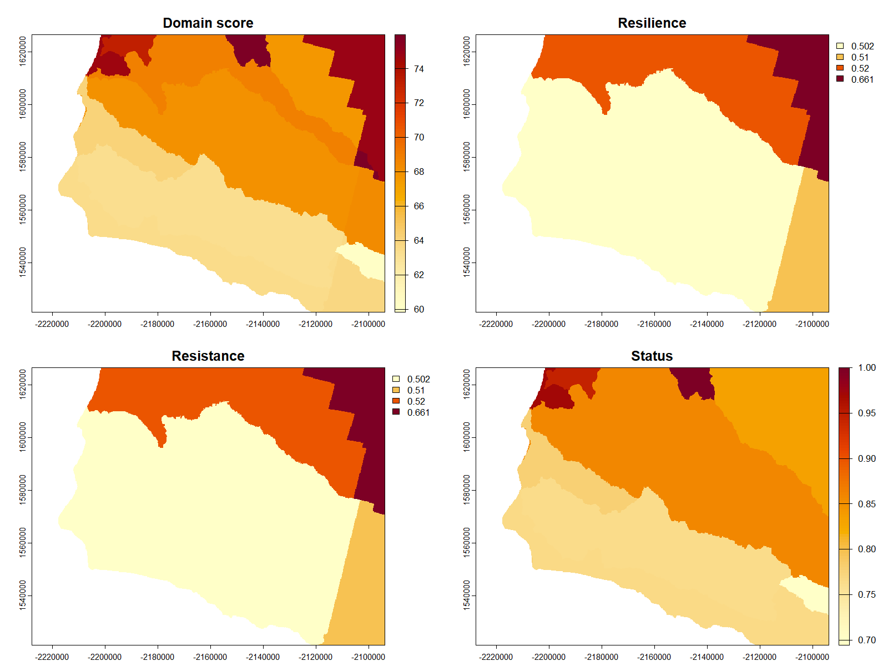

Comparing Layers Across Domains
Source:vignettes/comparing-layers-across-domains.Rmd
comparing-layers-across-domains.RmdThe WRI measures resilience across eight domains: air quality, communities, infrastructure, livelihoods, natural habitats, sense of place, species, and water. Each domain has status, resistance, resilience, and recovery layers. This vignette shows how to retrieve several layers for the same area and compare them.
Start by browsing the catalog to identify the layers you want:
library(firex)
library(terra)
# Get the full catalog as a data frame
df <- wri_overview_df()
# List all water-domain layers
subset(
df,
wri_domain == "water",
select = c(id, wri_dimension, data_type)
)
#> id wri_dimension data_type
#> 75 water_domain_score domain_score aggregate
#> 76 water_resilience resilience aggregate
#> 77 water_resistance resistance aggregate
#> 80 water_status status aggregate
#> 81 water_status_surface_water_quantity status indicator
#> 82 water_status_surface_water_timing status indicatorRetrieve two domain-level layers for the same area and compare them
side by side. The output of get_layer() is a terra
SpatRaster, so standard terra operations work directly:
# Santa Barbara County, CA in WGS84
sb_bbox <- c(-120.7, 34.4, -119.4, 35.1)
water <- get_layer(
"water_domain_score",
aoi = sb_bbox,
aoi_crs = "EPSG:4326"
)
air <- get_layer(
"air_quality_domain_score",
aoi = sb_bbox,
aoi_crs = "EPSG:4326"
)
# Stack layers and plot together
stack <- c(water, air)
names(stack) <- c("Water domain", "Air quality domain")
plot(stack, col = hcl.colors(100, "YlOrRd", rev = TRUE))
# Compute pixel-level correlation between domains
cor(values(water), values(air), use = "complete.obs")
#> [1] 0.41You can retrieve any number of layers this way. For systematic
comparisons, use lapply() to iterate over a vector of layer
IDs:
# Retrieve all aggregate water-domain layers
water_ids <- subset(
df,
wri_domain == "water" & data_type == "aggregate"
)$id
water_layers <- lapply(
water_ids,
get_layer,
aoi = sb_bbox,
aoi_crs = "EPSG:4326"
)
names(water_layers) <- water_ids
# Inspect dimensions to confirm all layers are aligned
sapply(water_layers, terra::dim)
Figure 6. Four aggregate water-domain layers retrieved for Santa Barbara County, CA using the same bounding box and iterated with lapply(). Each panel is a SpatRaster in EPSG:5070; colour scales differ by layer.
The figure is generated from the reproducible script
inst/figures/fig6_water_domains.R.